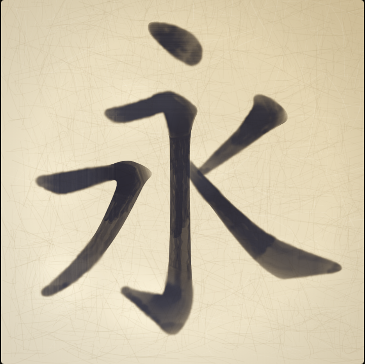

the whole corridor, end to end, in the five locked worlds — every page, every feature
墨・楮紙 ─ 朱・胡粉 ─ 焦茶・柿渋 ─ 胡粉・黒漆 ─ 紺紙金泥
永遠
薄明
触れると、ひらく
The night sea keeps its stars; the title takes gold leaf. Drifting words carry starlight, and the whole app inherits this world when the night seal 金 is pressed.
首相、経済政策の見直しを表明
ウィキニュース · 二〇二六年八月 · N2程度
走れメロス — 太宰治
青空文庫 · 中級 · 続きから
円相場、会見直後に小幅反発
ウィキニュース · 経済 · 短文
新聞アーカイブ 六九四本 →
The day canon: warm kōzo paper, sumi ink, and exactly one red — 朱 — doing all the pointing. Article cards sit as raised paper, the archive door counts its 694 stacks.
首相は記者会見で、来年度の経済政策を全面的に見直す方針を明らかにした。専門家は、この決定が市場に与える影響を注視watch closelyしており、野党は臨時国会の召集を求めている。
The tap circle unchanged — ふりがな, meaning, back to bare — with readings in 朱 above the line and English as a tutor's pencil beneath. The paper is fibrous, never #FFFFFF.
← 戻る
彼女は黙って頷いた。
She nodded silently.
用例の蔵 · タトエバ — CC BY 2.0 FR
タップで語の円環 · 長押しで辞書
Every example sentence opens into its own minimum reader — big type, full tap powers, the 朱 capture seal waiting in the corner, its source honestly credited at the foot.
はんとう
伊豆半島は温泉で有名だ。▹
Whatever world you read in, the dictionary rises as black lacquer: gofun-white entries, gold hairlines, the pitch line drawn over the kana, minor senses wearing their honest tags. 戻る goes back one screen, always. Kanji tiles open the stroke room.
← 戻る
うなずく
to nod, to bow one's head in assent
どこまで一緒に憶える？
彼女は黙って頷いた。
Word alone, one sentence, or the whole paragraph — chosen at capture time, pressed with the 朱 seal. What you keep is what you'll see again on the answer face.
読みと意味を思い出す
答を見る
Review happens at the night desk: one washi card floating on indigo, nothing else. The retention dial and today's count whisper at the top and then get out of the way.
うなずく
to nod, to bow one's head in assent
彼女は黙って頷いた。
She nodded silently.
説明を聞いて、彼は深く頷くしかなかった。
次回 · 三日後 · FSRS-6
The four grades become seals — 良 pressed solid in 朱, 易 edged in gold, 再 waiting in outline. Example sentences keep full reader powers, bare by default.
音響効果 — how does it read here?
音読み · 呉音
The probe gets the bright world: shell-white paper, vermilion strikes. Misses mint straight into the review deck — the dojo feeds the desk.
← 書架
六九四本 · ウィキニュース · CC BY 2.5
二〇二六年
八月一〇日 · 政治参院選、投票率が過去最高を記録
八月三日 · 科学探査機、木星の衛星で氷の噴出を観測
二〇二五年
一二月一日 · 社会京都、観光客数が年間最多を更新
一〇月九日 · 経済日銀、金利政策の維持を決定
Old news lives on persimmon-tannin paper — the mingei register, cloudy with age. Year stacks, honest licences, six hundred ninety-four doors.

永 · 五画 · 生きた墨
触れて、もう一度
Every kanji tile in the dictionary opens here: the lattice-Boltzmann brush writes it stroke by stroke, day ink or night gold following your world. This frame is the real engine's output.
五彩 — 世界をえらぶ
復習ログ 三、二一四行 · 観察ログ 八、九〇二行 · 語彙 一、〇八七語
すべて、この端末の中に。
The five worlds sit as inkstone dots — the current one ringed in 朱. Dials keep their words; the export keeps its promise: everything stays on the device.